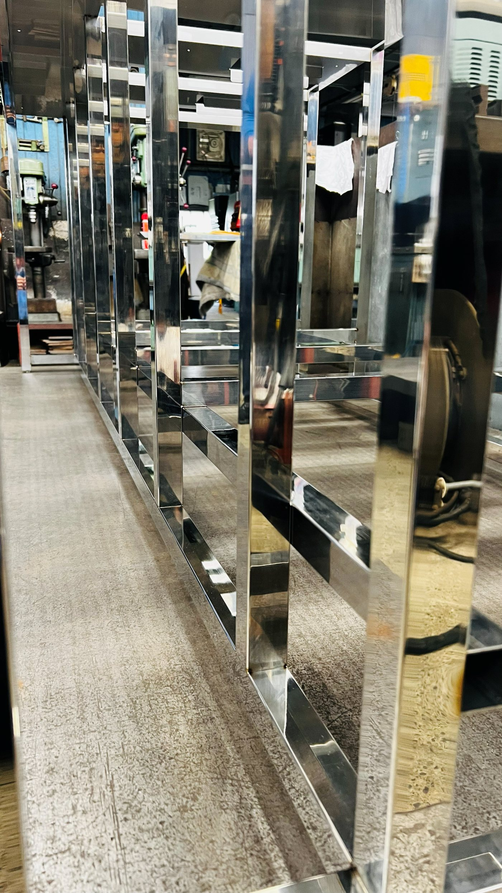
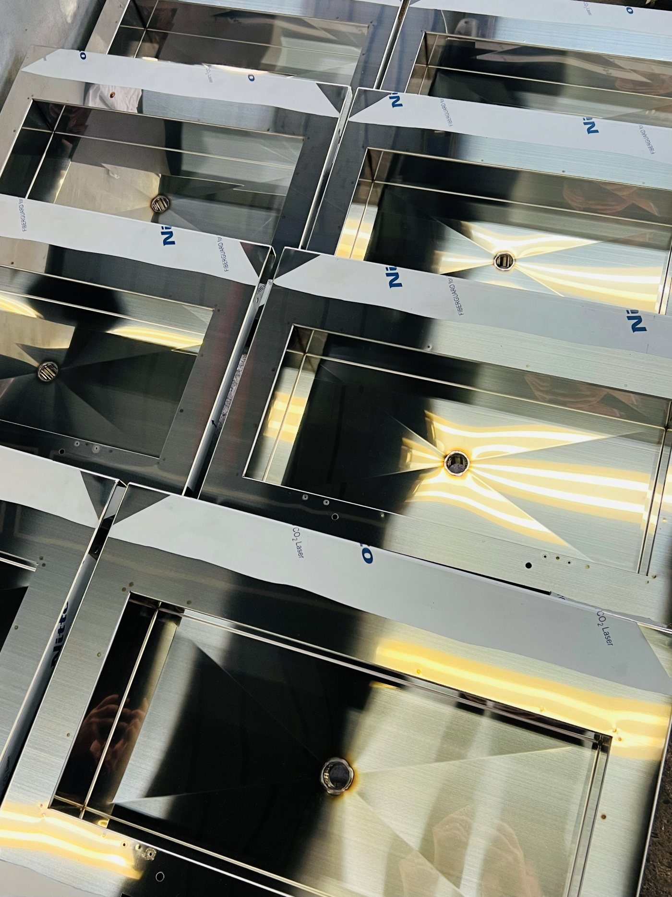
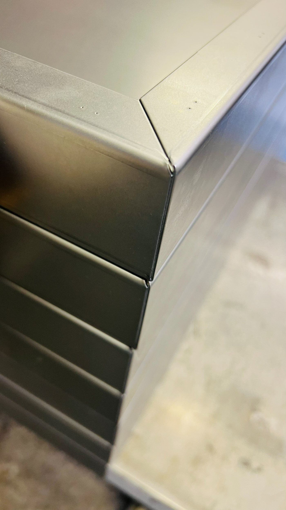
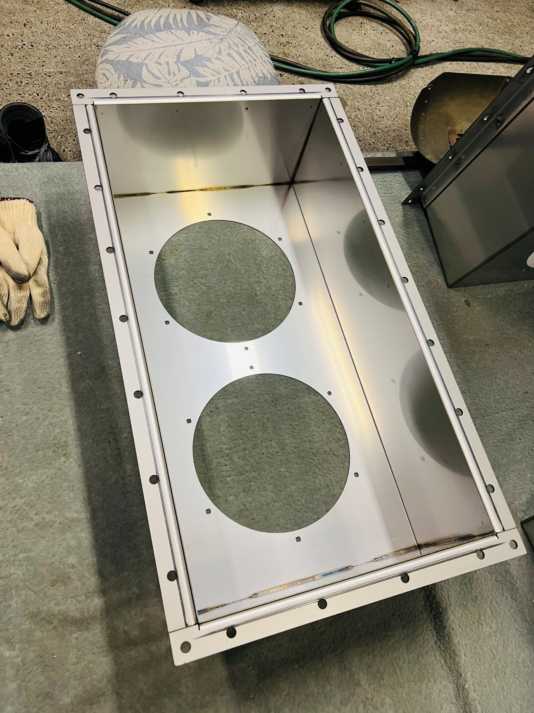
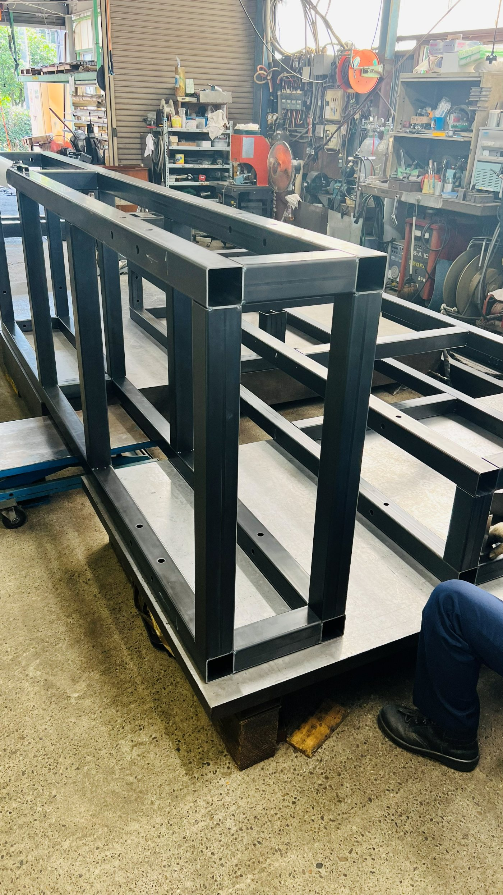
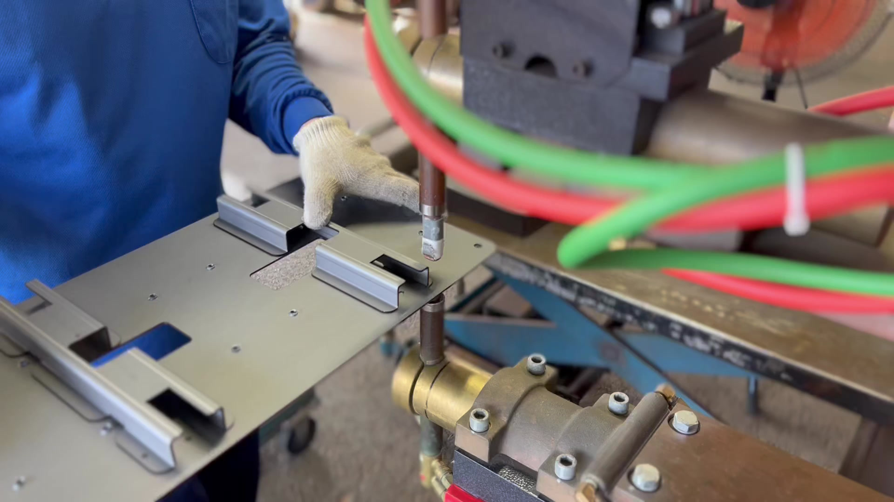
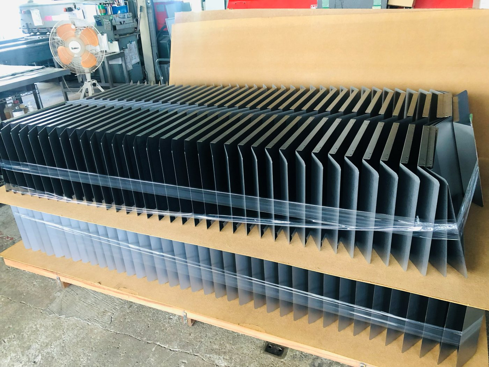
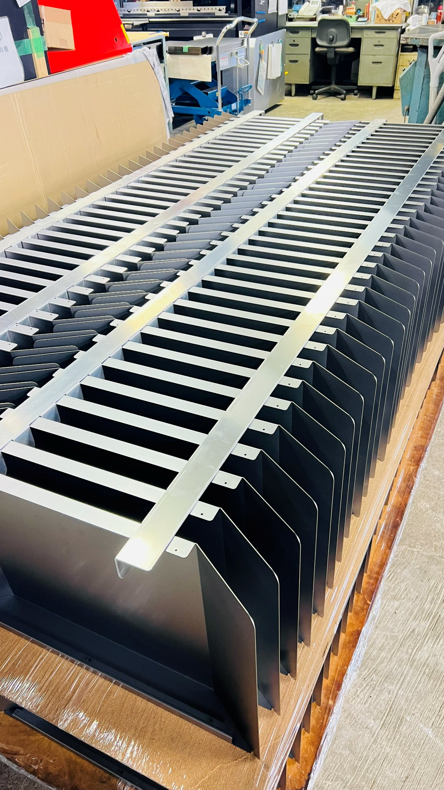
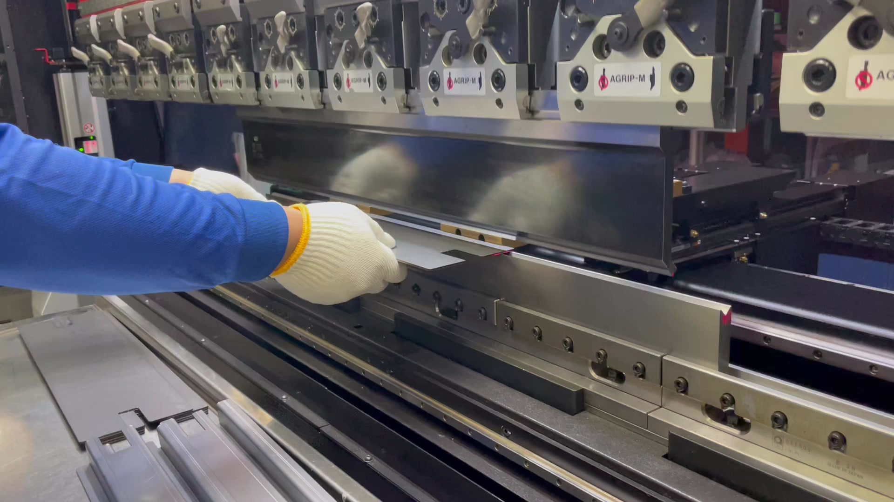

産業機器・自動車・住宅設備まで。多業界の「難しい一品」にお応えしてきた実績の一部をご紹介します。

鏡面の美しさが求められるオールステンレス筐体。切断・曲げ・溶接・仕上げを一貫対応。

レーザー切断材を保護フィルムのまま曲げ・組立へ。傷を防ぎながら美観を保って加工。

角の通り、稜線の美しさ。曲げの精度が、そのまま製品の質を物語ります。

お客様の図面を、作りやすく設計変更。工法と品質を設計段階から両立しました。

アングル・角パイプの切断溶接による大型フレーム。強度と寸法精度を両立。

ロボットにはできない領域に職人の技。難加工にも工法を検討しながら挑みます。

多数個取りのカバー部品。整然と積み上がる、安定品質の量産。

同一形状をくり返し量産。曲げの再現性こそ、板金量産の生命線です。

角度センサー付ベンダーで、狙い通りの形状へ。段取りが品質を支えます。
最新の加工事例は Instagram @kakinumass でも日々発信中です。
他社で断られた加工も、まずはご相談ください。